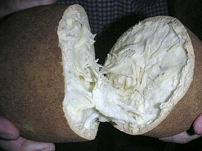

Sobre a AgroFeira
Palavra do produtor
Direto do produtor, sem atravessador. O preço é justo para quem consome e para quem cultiva em Paragominas e nas colônias vizinhas.

Como vender na feira
- Faça o cadastro online com os seus dados e número do CAF.
- Aguarde a validação da comissão de feirantes.
- Traga os seus produtos frescos nas manhãs de sexta-feira.